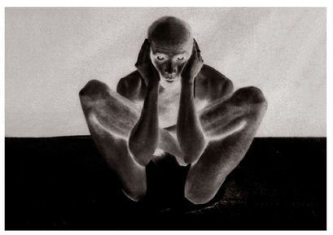
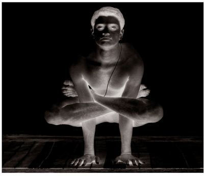
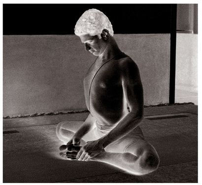
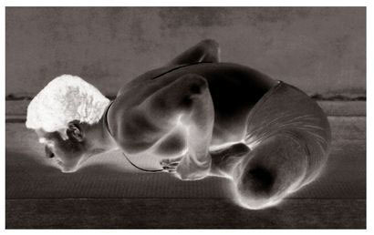

Kurmasana has sixteen vinyasas, the 7th and 9th vinyasas of which constitute the states of the asana. The state of the 9th vinyasa is called Supta Kurmasana [Reclined Tortoise] (see figure).
METHOD
Begin with the first 6 vinyasas of the first Surya Namaskara, as specified in earlier asanas. In the 7th vinyasa and doing puraka, jump as in Bhujapidasana, lower down to the floor with the strength of the arms, stretch the arms out under the thighs, straighten the legs, put the chin on the floor, lift the head to some extent, and do rechaka and puraka as much as possible. Then, doing rechaka, bring the hands up behind the back and take hold of the wrist; this is the 8th vinyasa. Next, cross the legs over each other, put the head on the floor, and do puraka and rechaka as much as possible; this is the 9th vinyasa, the state of which is called Supta Kurmasana. The next vinyasas follow those of Bhujapidasana.
GARBHA PINDASANA

KUKKUTASANA

BADDHA KONASANA, 7TH VINYASA

BADDHA KONASANA, 8TH VINYASA

BENEFITS
Kurmasana purifies the kanda, or nerve plexus in the anal region from which all 72,000 nadis grow. It also purifies the heart and lungs, and eliminates ailments caused by an imbalance of kapha dosha [phlegm]. The chest becomes broad, bad fat is dissolved, and the spinal column becomes strong. Chest pain due to over-tiredness is cured, disorders from bad food remedied, and the fat in the lower abdomen dissolved, allowing the body to become healthy.